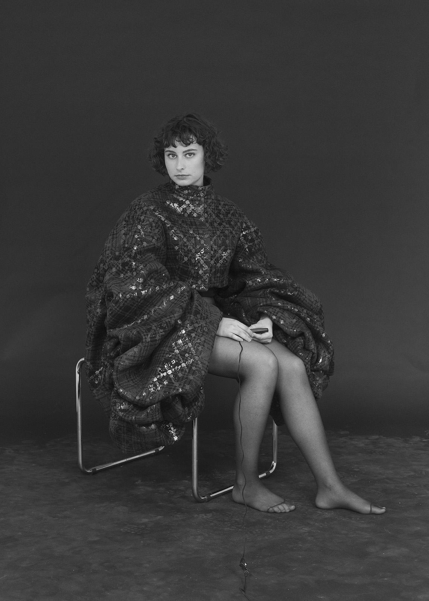

about

Fashion Designer and wannabe hacker. Currently based in the Netherlands.
Fashion Designer and wannabe hacker. Currently based in the Netherlands.
September 2017 – July 2019
ArtEZ Institute of the Arts (Arnhem)
Fashion Design (graduated with honors)
September 2016 – August 2017
Eindhoven University of Technology (Eindhoven)
Industrial Design (unaccomplished)
September 2014 – August 2016
ArtEZ Institute of the Arts (Arnhem)
Fashion Design
September 2013 – February 2014
ArtEZ Institute of the Arts (Arnhem)
Preparatory course Art & Design
August 2008 – May 2014
Liemers College (Zevenaar)
Gymnasium, A-levels equivalent (graduated with honors)
HTML, CSS
Processing
Microsoft Office
Adobe CC
Dutch (native)
English (good)
French, Spanish, German (basic)
Designing
Pattern making
Print and textile development
Technical drawing
Fashion illustration
Fabric knowledge
Sewing
June 2018 – August 2018
Digitpaint (Arnhem)
Junior front-end developer
February 2018 – May 2018
Preen by Thornton Bregazzi (London)
Assisting with various studio tasks
September 2017 – January 2018
Collectie Arnhem (Arnhem)
Designing and developing a collection with classmates from concept to show
February 2017 – March 2017
Angella Mackey (Eindhoven)
Assisting with Wearable Technology Experience Design project
June 2016 – July 2016
Sunna Örlygsdóttir (Arnhem)
Working for ArtEZ Fashion Masters student
Embroidery and finishings of garments, helping at the Frans Molenaar Couture Award, assisting with a photoshoot